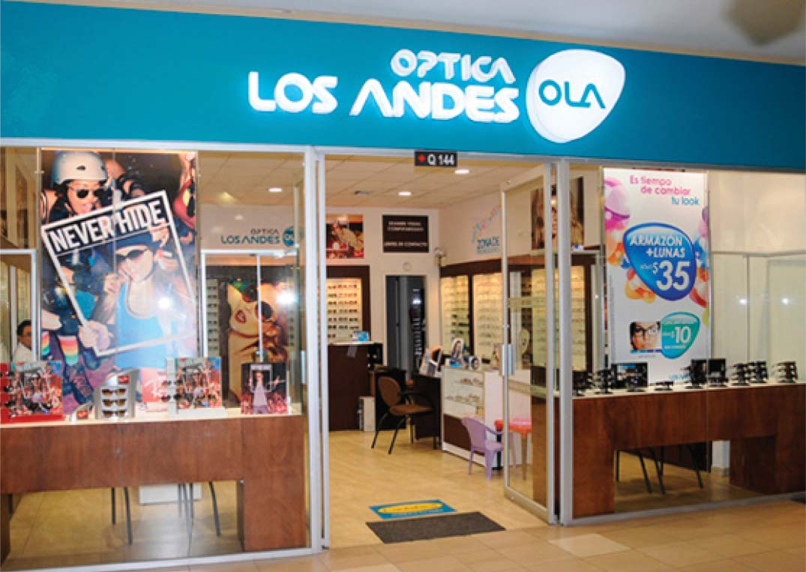

QUIENES SOMOS
PRODUCTOS
SERVICIOS
PLANES EMPRESARIALES
TRABAJA CON NOSOTROS
CONTACTO
1
1
1
Optica los Andes posee 50 locales, por todo el Ecuador por las principales ciudades del país, ofreciendo productos de calidad y facilidad a nuestros clientes donde quiera que este.
QUITO
- C.C. EL BOSQUE
- C.C. QUICENTRO SHOPPING
- C.C. QUICENTRO SHOPPING
- C.C. QUICENTRO SHOPPING
- C.C. QUICENTRO SHOPPING
- C.C. QUICENTRO SHOPPING
GUAYAQUIL
- C.C. EL BOSQUE
- C.C. QUICENTRO SHOPPING
- C.C. QUICENTRO SHOPPING
- C.C. QUICENTRO SHOPPING
- C.C. QUICENTRO SHOPPING
- C.C. QUICENTRO SHOPPING
CUENCA
PORTOVIEJO
MANTA
ESMERALDAS
AMBATO
RIOBAMBA
SALINAS
QUEVEDO
MACHALA
IBARRA
ENCUENTRANOS

C.C. El Bosque
Carvajal y Lizardo García.
2 222-5454
09 952-5454
HORARIO DE ATENCIÓN
Lunes a Viernes 9:00 a 19:00
Sábado y Domingo 10:00 a 17:00
VER UBICACIÓN DEL LOCAL